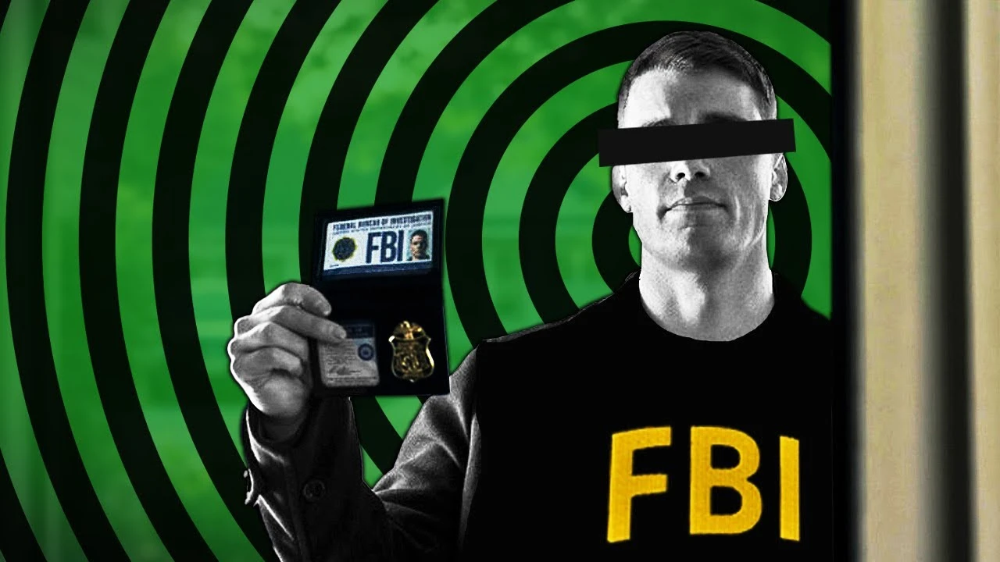
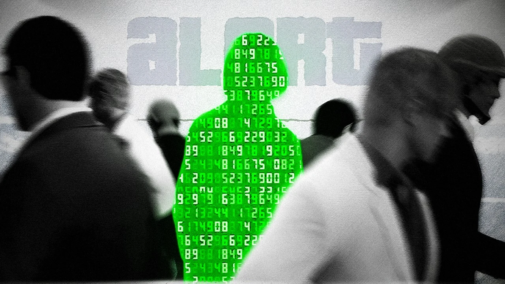
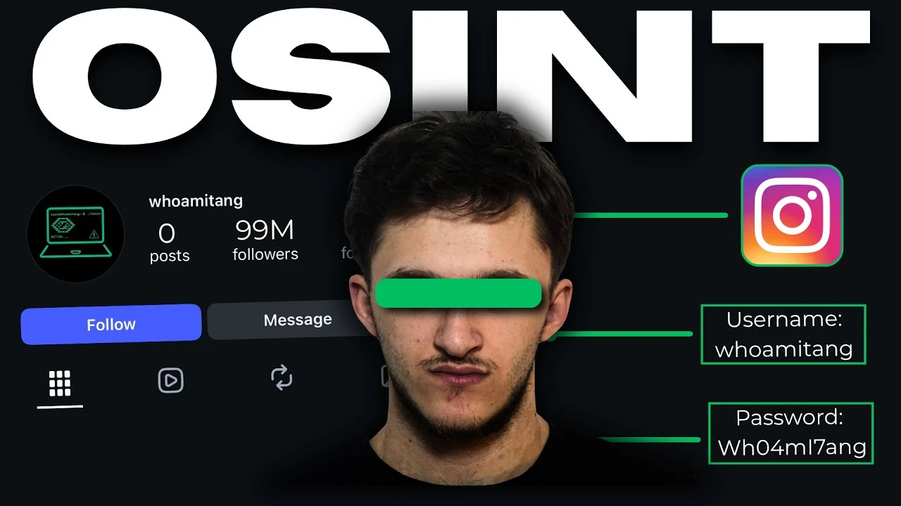
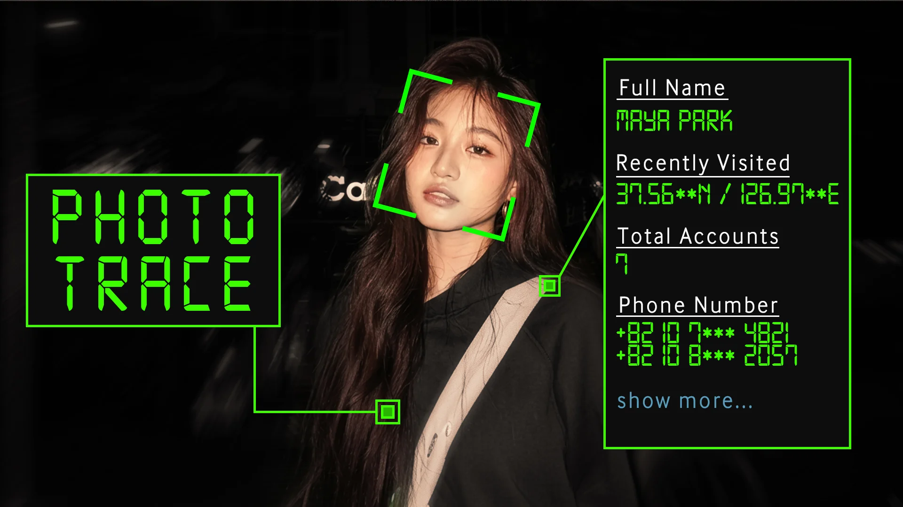
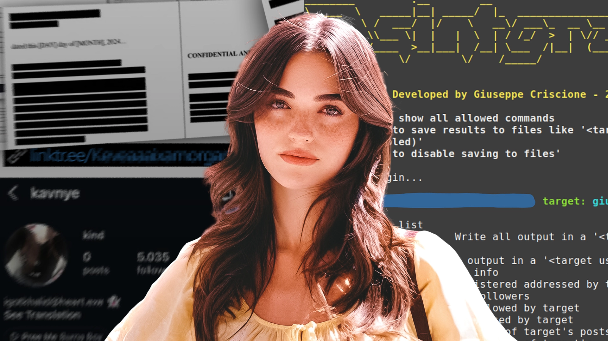
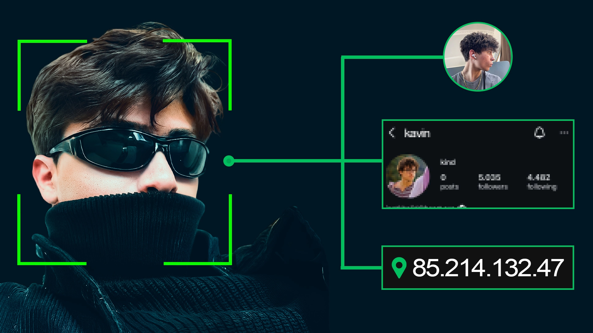

1. Quick Look at the Video
Niche:
Tech education
Description:
This video breaks down how ethical hacking works using real-world examples. It also shows people how to protect themselves from cyber attacks and wraps up with an overview of the creator's course.
Aim of Video:
The goal here isn't just getting casual subscribers. It is to turn viewers into community members who buy the "Ethical Hacking for Beginners" course.
2. The goal
Objective:
Basically, the goal is to make the thumbnail beginner friendly instead of adding details most people new to this topic wouldn't even know about. The thumbnail must be clear and understandable by a beginner audience while still being meaningful to an expert/professional, all while maintaining visual clarity.
3. Let's see what's working in this niche
So most of the thumbnails in this specific niche have either dark colored theme or green/matrix theme which matches the vibe of these types of topics. So after researching for a while I found several thumbnails that looked quite impressive but obviously picking randomly and making a thumbnail combining several styles that look good, almost never works. So i picked these few thumbnails to decide the theme:



They all follow a bit more dark colored theme and more muted colors with text, or have Green as the dominant color.
4. Lets Build The thumbnail
Main Subject:
The person in the image needs to be the main focus. Placing the main subject cleanly in the center immediately catches the viewer's eye before they even look at the extra details.
UI Elements & Text:
The tracking boxes and digital data text are there to instantly show what the video is about (OSINT and tracking) without making things messy. Keeping the text styled like a computer terminal gets the message across fast.
Background & Contrast:
Everything behind the person is kept dark. By pushing the background into the shadows, the bright green tracking lines and the subject naturally pop out on the screen.

5. A/B Testing (Revisions)
The Two Variants:
Before settling on the final look, I tested a couple of different layouts. One variant focused heavily on an entirely different angle with different data placements, while the other experimented with similar text and design themes while having a different color theme.


Final pick:
Why choose this Version:
While both variants looked decent, they didn't hit the right balance of immediate clarity. The final version streamlined the data overlays and positioned the tracking elements so the viewer instantly understands the topic at a glance. By keeping the interface clean and the subject as the primary focal point, it outperformed the others in visual readability.